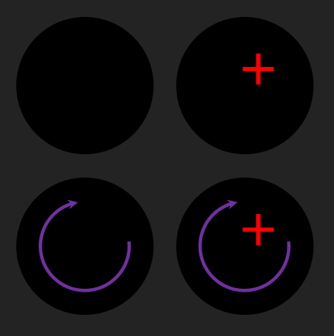

Structure
There are various sections of a black hole. This section goes into detail about the singularity, event horizon, ergosphere, and accretion disk. There is another section called the photosphere, where if you were to look at either side, you would theoretically see the back of your head. This is because the light would travel all the way around the black hole and back to your eyes.
Classification
There are three externally measurable features of black holes: their mass, charge, and rotation. This is called the no-hair theorem, where a black hole can only be identified by these three quantities. If there were two black holes with identical mass, rotation, and charge, they are indistinguishable from each other as far as an outside observer is concerned.
General Relativity

This section explores the strange effects of general relativity that black holes have on spacetime and objects around it. Specifically, time dilation and spaghettification, as well as information on Carter-Penrose diagrams.